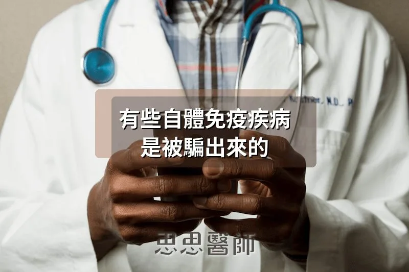

有些自體免疫疾病，是被騙出來的

鏈球菌（Streptococcus）引起的喉嚨痛，大多數人一兩週就會自己好。但在少數人身上，感染結束之後，身體還沒停止攻擊，只是攻擊目標悄悄換成了自己的心臟。抗生素治好了細菌，卻沒辦法阻止已經被觸發的免疫反應，心臟瓣膜就這樣一次次被自己的免疫細胞侵蝕，最後留下永久性的疤痕和損傷，這就是風濕性心臟病（rheumatic heart disease）。
這個現象的名稱叫做分子模擬（molecular mimicry）。意思是：某些病原體或食物蛋白質，在分子結構上和人體自身的蛋白質長得太像，導致免疫系統在攻擊外來入侵者的同時，也把自己的組織一起打了。這不是免疫系統失靈，是被騙了。而且大自然用這個把戲，已經練習了很長很長的時間。
鏈球菌為什麼能傷心臟
鏈球菌的細胞壁上有一種叫做 M 蛋白（M protein）的結構，它的空間形狀幾乎和人類心臟的肌凝蛋白（cardiac myosin）一模一樣。當免疫系統製造出辨認 M 蛋白的抗體和 T 細胞之後，這些免疫武器在遇到心臟肌肉的時候，會認為自己遇上了同一個敵人，繼續發動攻擊。2025 年發表在《Frontiers in Cellular and Infection Microbiology》的系統性回顧指出，鏈球菌還有另一個模仿對象，就是心臟瓣膜裡的醣蛋白。也就是說，這個細菌同時偽裝成兩種心臟結構，讓免疫系統的誤傷更加全面。
風濕性心臟病目前影響全球約四千萬人，每年造成超過三十萬人死亡。它的治療核心不是心臟手術，而是在感染早期用盤尼西林（penicillin）消滅鏈球菌，在誤傷開始之前把觸發源清除掉。這也說明了分子模擬的特性：一旦免疫反應被喚醒，光靠處理原始病因已經不夠了。
EB 病毒與多發性硬化症，等了三十年的答案
多發性硬化症（multiple sclerosis，MS）是一種神經系統的自體免疫疾病，免疫細胞持續破壞包覆神經的髓鞘（myelin sheath），造成肌肉無力、視力模糊、認知障礙，甚至癱瘓。幾十年來，科學家一直懷疑這個病和某種病毒感染有關，但從來沒辦法確定。2022 年，《Science》期刊發表了一項追蹤超過一千萬名美軍士兵達二十年的研究，答案終於清晰：在幾乎所有的多發性硬化症案例發病之前，都能找到 EB 病毒（Epstein-Barr virus，EBV）感染的紀錄，感染過 EBV 的人，罹患多發性硬化症的風險比未感染者高出三十二倍。
機制在 2025 年被進一步確認。《PNAS》的研究分析了六百五十名多發性硬化症患者，找到了 EB 病毒的核心蛋白 EBNA1 和大腦組織之間的分子模擬路徑：EBNA1 的特定片段和人類中樞神經系統裡的三種蛋白質高度相似，包括負責神經膠質細胞之間結構連接的 GlialCAM、在髓鞘形成細胞裡高度表現的壓力蛋白 Alpha-crystallin B，以及神經元上的氯離子通道 Anoctamin-2。免疫系統在對抗 EB 病毒的過程中產生的抗體，後來找到了這三個在大腦裡長相相似的蛋白質，開始攻擊髓鞘。
幾乎每個成年人都曾感染過 EB 病毒（青少年時期的單核球增多症常常就是它引起的），但多數人終生不會得多發性硬化症。這代表 EBV 感染是必要條件，但不是充分條件。還需要特定的基因背景（尤其是 HLA 免疫基因型），以及可能的其他環境因素疊加，才會讓這個誤傷的開關真正打開。
新冠病毒留下的自體免疫印記
SARS-CoV-2 的棘蛋白（spike protein）結構裡，包含多個和人類蛋白質高度相似的片段。其中最有臨床意義的一個，是一段八個胺基酸的序列，和人類心臟肌凝蛋白基因 MYH6 的序列完全一致。2024 年發表在《Nature Communications》、追蹤四百八十七位受試者的研究發現：感染新冠病毒之後，新出現的自體抗體在六十% 的案例中，十二個月後仍然維持在高水平，而且特定的自體抗體組合和長新冠的神經精神症狀直接相關，包括持續的腦霧（brain fog）和情緒障礙。
這解釋了一部分長新冠（Long COVID）的機制：不是病毒還在身體裡複製，而是感染之後觸發的自體免疫反應持續存在。心臟、神經系統、內分泌腺體，都可能成為這場遺留攻擊的目標，取決於每個人免疫系統的交叉反應模式和基因背景。
麩質，以及它和甲狀腺的意外連結
飲食蛋白質也可以是分子模擬的來源。麩質（gluten）裡的麥膠蛋白（gliadin）和人體的第二型組織轉谷胺醯胺酶（tissue transglutaminase type 2，tTG2）在結構上相似。對麩質有免疫反應的人，免疫系統製造出的抗 tTG2 抗體，不只會攻擊腸道，還會辨認甲狀腺裡的 tTG2，引發甲狀腺的自體免疫反應。這是乳糜瀉（celiac disease）和橋本氏甲狀腺炎（Hashimoto’s thyroiditis）共病率遠高於機率預期的原因，不是巧合，而是同一個分子模擬機制的兩個出口。
更戲劇性的是麩質和小腦的關係。人類神經元裡有另一種轉谷胺醯胺酶亞型（TG6），和 tTG2 結構相似，也會被同一組抗體辨認。麥膠蛋白和 TG6 形成的複合物進入血液之後，可以穿越血腦屏障，引發小腦的免疫攻擊，導致小腦萎縮和步態不穩的「麩質共濟失調（gluten ataxia）」。這個疾病在嚴格執行無麩質飲食之後，症狀可以穩定甚至改善，但已死亡的小腦神經元無法再生。
最新的意外：你的腸道細菌也在做同樣的事
2024 年發表在《eBioMedicine》（刺胳針旗下期刊）的研究帶來了一個讓人意外的發現。研究者掃描了三十萬個人類微生物基因組，尋找和多發性硬化症的關鍵自體抗原 MOG（髓鞘寡突細胞醣蛋白，myelin oligodendrocyte glycoprotein）結構相似的細菌來源肽段，找到了七百三十一個。其中最有效的模擬肽段 P3，來源是嗜黏蛋白艾克曼菌（Akkermansia muciniphila），一種通常被認為對腸道有益、和代謝健康正相關的細菌。把這個肽段注射進小鼠體內，不只誘發了多發性硬化症的動物模型，還讓疾病嚴重程度顯著加劇。
這個發現的含義不是「Akkermansia 是壞菌」，而是：分子模擬的來源比我們以為的更廣，就算是腸道裡的共生菌，在特定條件下也可能觸發針對神經組織的免疫反應。腸道菌相、飲食、病毒感染史、基因背景，這些因素交織在一起，決定了誰的免疫系統最終會認錯人。
這件事你可以怎麼做
1. 分子模擬的損害往往在感染或飲食觸發之後很久才顯現，而且一旦自體免疫反應建立，光處理原始誘因通常已不夠。及早辨認、及早介入，是目前最有效的策略。
2. 如果你同時有腸道問題和甲狀腺自體抗體升高，試著評估麩質的攝取量是否需要調整，這兩者之間的連結有明確的機制支撐，不是飲食潮流。
3. 長新冠症狀持續超過三個月，尤其是腦霧、心悸、疲倦，值得考慮檢測自體抗體，因為部分症狀可能來自持續的免疫誤傷，而不是病毒本身的殘留影響。
4. 腸道菌相的多樣性、發炎程度、腸道通透性，全都影響了分子模擬觸發自體免疫的機率。維持腸道健康，不只是消化的問題，也是免疫系統分辨敵我的基本條件。
大自然用幾億年的演化，磨出了這套讓外來入侵者看起來像「自己人」的把戲。免疫系統的本意是保護你，只是有時候，被騙的代價由你的心臟、神經系統或甲狀腺來承受。
（本文由我規劃架構與觀點，並協同 AI 校正與潤飾語句）
參考資料
1. Sattarnezhad N, et al. Antibody reactivity against EBNA1 and GlialCAM differentiates multiple sclerosis patients from healthy controls. PNAS. 2025. DOI: 10.1073/pnas.2424986122
2. Jernbom AF, et al. Prevalent and persistent new-onset autoantibodies in mild to severe COVID-19. Nature Communications. 2024;15:8941. DOI: 10.1038/s41467-024-53356-5
3. Ma X, et al. Human microbiome-derived peptide affects the development of experimental autoimmune encephalomyelitis via molecular mimicry. eBioMedicine. 2024;111:105516. DOI: 10.1016/j.ebiom.2024.105516
━━━━━━━━━━━━━━━━━━━━
 空腹小雞跟思思醫師一起斷食，順便養一隻小雞來養小雞 →
空腹小雞跟思思醫師一起斷食，順便養一隻小雞來養小雞 →
好朋友早餐信
一週一封：《健康駭客週報》這集的研究重點，加上家醫專欄這週的新文章。免費，隨時可以退訂。
延伸閱讀

酮體如何拯救缺能的神經元
大腦靠葡萄糖供能，神經元胰島素阻抗時能使用酮體替代燃料，有助於神經退化性疾病的改善。

脂肪肝裡，脂肪對肝細胞做了什麼
脂肪肝是肝細胞內游離脂肪酸等造成內質網壓力、粒線體損傷、細胞死亡，進而引發發炎與纖維化的連鎖傷害過程。

胰臟癌最被忽略的風險因子，不是遺傳也不是飲酒
長期高胰島素血症會刺激胰臟腺泡細胞過度生產消化酵素，引發反覆發炎，是胰臟癌癌前病變形成的關鍵驅動因素。